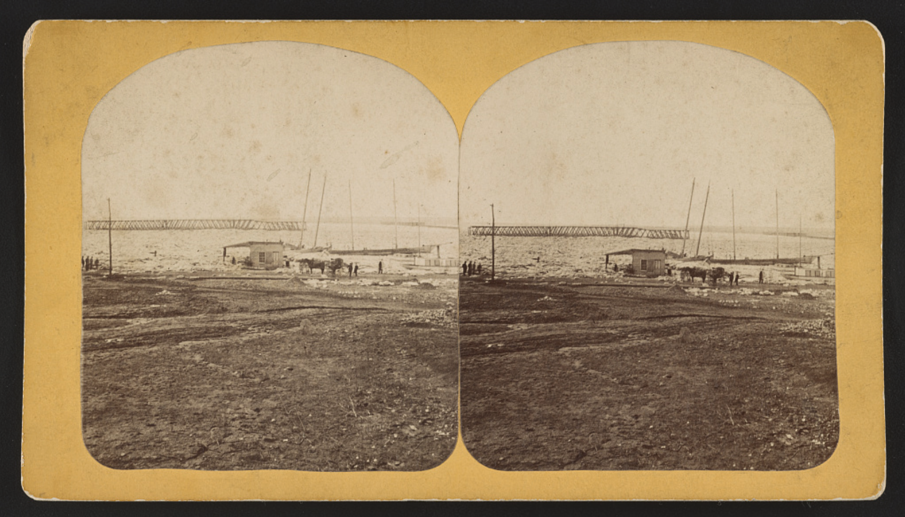

1
Infrastructure



After a flood in 1881, the Army Corps of Engineers dredged the Potomac River and used sediment from the Washington Channel shipping canal to fill in the tidal wetlands. Six years later, in 1887, engineers installed gates at the entrance and exit of a new pond (now the Tidal Basin). It was designed so that at high tide, the gates open and fill the basin with water. At low tide, the water exits into the Washington Channel, and the rush of exiting water sweeps the leftover sediment away.
Kutz Memorial Bridge, which carries Independence Avenue across the Tidal Basin, was designed by Paul Cret and completed in 1943. Archie Alphonso Alexander, African American engineer, built the bridge with his partner Maurice Repass. The pair hired both African American and white laborers and refused to racially segregate the work site.
2
Public Space
and Recreation
After a flood in 1881, the Army Corps of Engineers dredged the Potomac River and used sediment from the Washington Channel shipping canal to fill in the tidal wetlands. Six years later, in 1887, engineers installed gates at the entrance and exit of a new pond (now the Tidal Basin). It was designed so that at high tide, the gates open and fill the basin with water. At low tide, the water exits into the Washington Channel, and the rush of exiting water sweeps the leftover sediment away.
Kutz Memorial Bridge, which carries Independence Avenue across the Tidal Basin, was designed by Paul Cret and completed in 1943. Archie Alphonso Alexander, African American engineer, built the bridge with his partner Maurice Repass. The pair hired both African American and white laborers and refused to racially segregate the work site.